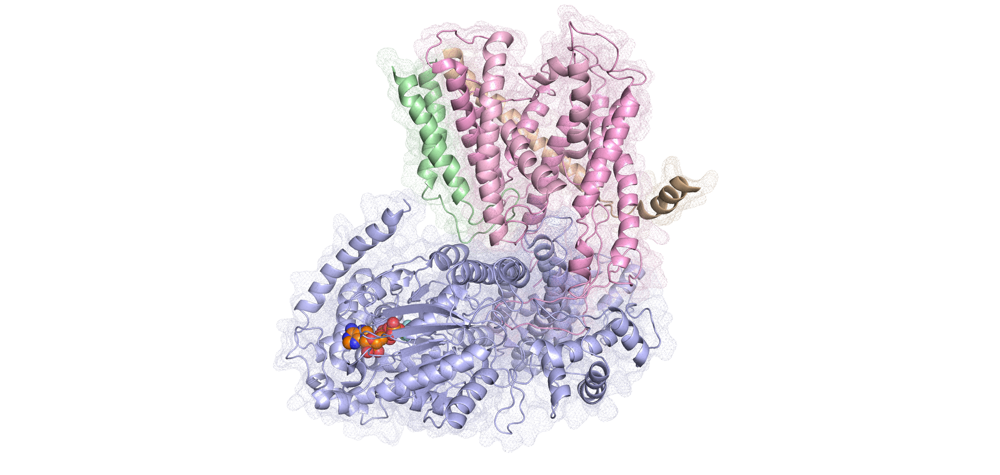

Research webpage of Robin Corey
About me
I am a postdoctoral research associate at the University of Bristol, working on the bioenergetics and biophysics of bacterial protein secretion.
Here is a brief overview of my primary research interests. For more info on each one, please check out the individual pages in the side bar
Reseach Interests
Mechanism of Sec-mediated translocation
In every cell, the Sec translocon acts as the primary route for proteins to either cross or insert into the plasma membrane. In bacteria, the translocon comprises SecY, SecE and usually SecG, with the protein-conducting pore through the centre of SecY. This complex can associate with either the ribosome for co-translational protein translocation - the main pathway for nascent integral membrane proteins to enter the membrane - or with the motor protein SecA for post-translational secretion.
For several years I've studied and devised possible mechanisms of how Sec drives protein transport, specifically how the free energy from ATP binding and hydrolysis and the proton-motive-force act to generate directional motion of the pre-protein. We beleive that ATP acts through biasing the free diffusion of unfolded pre-protein, either through the selective gating of the SecY channel to bulky/charged residues, or through generation of regions of secondary structure in the pre-protein. For an explanation of these mechanisms, please click here
Protein-lipid interactions
Membrane protiens are effected by the lipid bilayer, both through general biophysical effects and speficif protein-lipid interactions. One of my primary areas of interest is how lipid binding membrane protein structure and function. Some of the specific systems I'm interested in ae described in more detail below.
CFTR-cholesterol
Cystic fibrosis (CF) is a genetic disorder caused by mutations in the cystic fibrosis transmembrane conductance regulator (CFTR), a complexly-regulated epithelial Cl- channel and a unique member of the ATP binding cassette (ABC) protein family.
CFTR comprises a cytoplasmic ATPase domain, formed from two Walker A and B containing nucleotide binding domains, and a transmembrane region formed from two transmembrane domains. Between TMD1 and 2 is a channel through which Cl- ions are conducted across the membrane. In addition to these domains is the regulatory R domain (Fig. 1; blue), which needs to be phosphorylated before the channel can open

Cardiolipin-Sec
CL is an anionic phospholipid, found on a variety of energy-producing membranes including the mitochondrial inner membrane and the plasma membrane of many different bacteria and archaea. CL has an unusual structure, comprising two PG molecules joined by a glycerol head group. This provides each CL molecules with two phosphate head groups and four acyl chains.
CL likely has an important role in bioenergetics processes, as evidenced by its presence on energy transducing membranes and co-isolation with a considerable number of bioenergetics protein complexes – including the mitochondrial ATP synthase at a tri-methylated lysine residue, as well as with SecY. CL binding sites are typified by the presence of one or more basic residues that form pockets of positive charge on the surface of the protein as shown strutrally.
We have applied the MARTINI force field towards identification of CL binding sites in SecYEG. We aim to verify the data using experimental techniques previously applied to the same system, as well as using native mass spectroscopy
Membrane Protein Biophysics
We are interested in the analysing of membrane proteins using biophysics, to understand how conformational changes result in functional effects. One example of this is how SecY responds to signal sequence binding. We carried out a series of computational and computational biophsycial analyses on SecYEG in a state designed to mimic a signal sequence bound state. The results reveal a conformation coupling between SecA binding, signal sequence binding and SecE loosening. For more details check out the paper here or the subpage here .